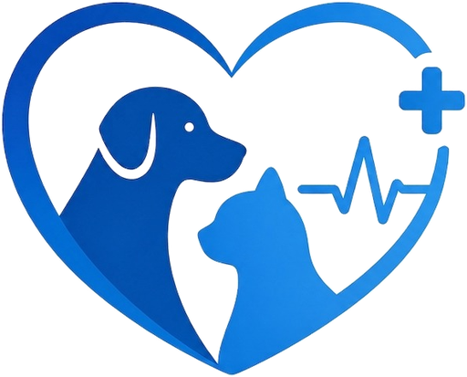
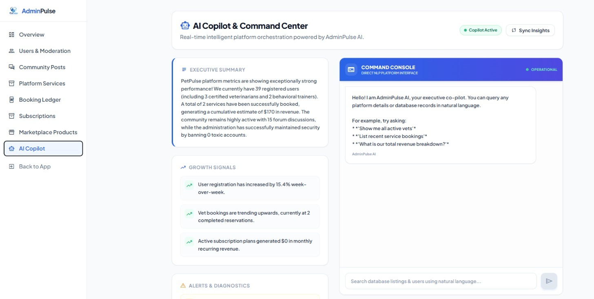

El Sewedy University of Technology · Graduation Project II · Phase 2
From prototype to a system that survives an attack.
Phase 2 defence
Phase 1 argued the idea was viable. Phase 2 has to show a system.
01 — Phase 1 to Phase 2
02 — Team
Dr. Mohamed Sobh · Eng. Hend Adel
03 — Problem
Each answer is live today — not a plan.
03 — Market Research
Graphic Designer from Cairo. Struggles with a busy work schedule and finding trustworthy pet care.
Collaborate with clinics and stores to provide a unified platform, dominating the fragmented Egyptian market.
03 — Solution
04 — Architecture
04 — Stack
Every paid dependency was replaced with a free or self-hosted equivalent before it entered the build.
05 — Delivered
All six reachable on the live URL — not staged behind a demo mode.
05 — Community Features
05 — Agentic AI
Ten typed tools, every argument schema-validated
A chatbot describes the booking. An agent writes it to the database — and refuses when the case is an emergency.
05 — Agentic AI · how it works
What the model is never trusted with
05 — Administration

06 — Demonstration
Every figure on that screen is read from the production database.
06 — Demonstration
Owners search for a vet on a phone — usually while something is already wrong.
07 — Testing
Suites run against a live server, not mocks — and were re-run after every security fix.
07 — Security
What each tool caught
Not one confirmed vulnerability came from an automated scanner.
07 — Findings
Credential rotated and purged; every npm tree now audited in CI. One item outstanding: a scoped database role.
08 — Results
Delivery measures, not usage. The platform is deployed but pre-launch — adoption is what the soft-launch answers next.
08 — Engineering decisions
08 — Timeline
Security ran against a frozen build — the findings describe what actually shipped.
08 — Outcomes
A codebase that passes every automated scan can still expose a super-user credential. Found by hand, by this team, and closed before anyone outside it saw the system.
We welcome your questions.